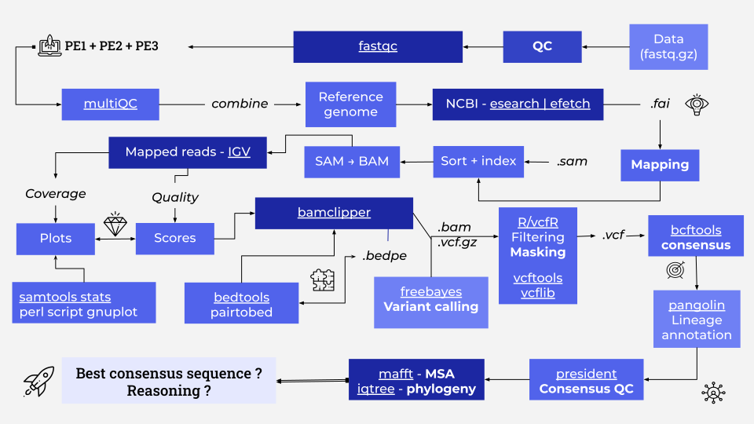

Pipeline Workflow Diagram and Overview¶
This section outlines the logical structure of the pipeline and provides a visual overview of each step.
Workflow Summary¶
The pipeline consists of the following key stages:
- Environment Setup: Initialize and configure the bioinformatics environment.
- Data Preparation: Download SARS-CoV-2 reference genome and raw Illumina sequencing data.
- Quality Control: Assess and clean raw sequencing reads using
fastqc,fastp, andmultiqc. - Mapping: Align cleaned reads to the SARS-CoV-2 reference genome using
minimap2and process alignments withsamtools. - Primer Clipping: Remove primer sequences from alignments using
bamclipper. - Variant Calling: Call genetic variants with
freebayes. - Filtering & Masking: Post-process variant calls using R scripts and
vcfR. - Consensus Generation: Generate consensus sequences using
bcftools. - Lineage Annotation: Annotate sequences using
pangolin. - Phylogenetic Analysis: Perform multiple sequence alignment with
mafftand infer phylogeny usingiqtree.
Workflow Diagram¶

Note: Each step is implemented as a separate Nextflow
processand connected logically inmain.nf.
For process-specific logic and input/output, see the Process Details section.